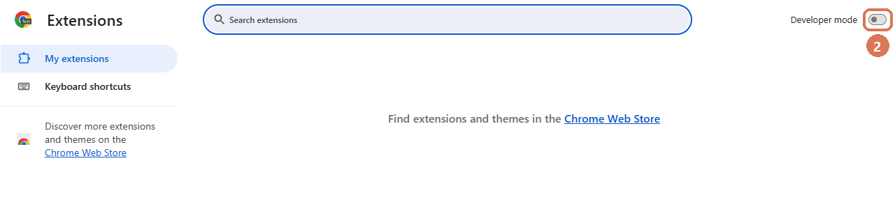
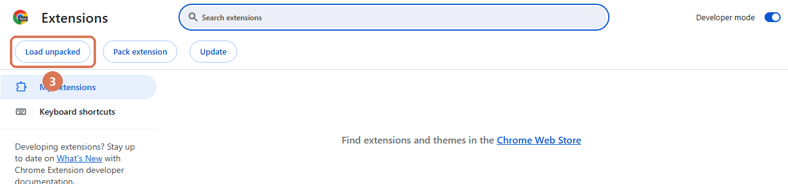
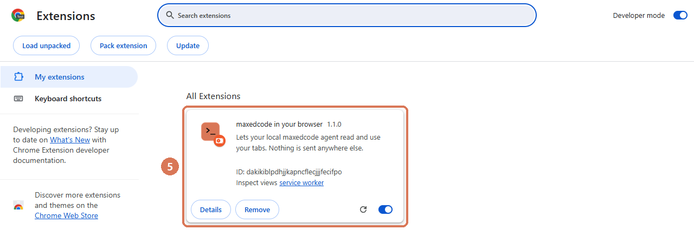

Connect your browser to maxedcode
Once, about two minutes. After this the maxedcode agent can read and use pages in your own Chrome or Edge, where you are already signed in. Chrome does not let programs install extensions by themselves, so these few clicks are yours.
1Open the Extensions page
Copy this address, click your browser's address bar (where you type websites), paste it and press Enter:
chrome://extensionsOr use the menu: the three dots ⋮ at the top right → Extensions → Manage Extensions.
In Microsoft Edge the address is edge://extensions.
Not the developer tools (F12, the panel full of code): this is a normal page called Extensions.
2Turn on “Developer mode”
The switch at the top right of the Extensions page. It only lets you add an extension from a folder on your computer.

In Edge the switch is in the left column, near the bottom.
3Click “Load unpacked”
New buttons appear under the title. Click the first one. A window to choose a folder opens.

4Choose the maxedcode extension folder
Copy the folder path:
C:\Users\YourName\AppData\Local\Programs\maxedcode\program\maxedcode\chrome\extensionReplace YourName with your Windows user name (the folder name in
C:\Users). If you installed maxedcode into another folder, it is program\maxedcode\chrome\extension
inside it (README.txt there shows the full path). Opened from maxedcode's Settings, this page shows the exact path.
In the folder window:
aclick the address bar at the top, paste the path (Ctrl + V) and press Enter;
bclick Select Folder.
Choose the extension folder itself, the one with manifest.json in it, not a file inside it.
“Manifest file is missing or unreadable” with ~\Downloads (or another folder) in
it: the path was pasted but Enter was not pressed, so the window still showed the old
folder. Paste, press Enter, check that the list shows manifest.json, then
click Select Folder. Or paste the path into the Folder: box at the bottom instead and click
Select Folder right away.
“No items match your search” or “not found”: the path went into the search box at the
top right. Paste it into the address bar on the left of it (click the empty space next to the folder names
there first). “Windows can't find …YourName…”: the path still has the example user name in it.
Without typing a path: open the folder in Explorer (in maxedcode: Settings → Browser →
Show the folder; in a terminal: python -m maxedcode.chrome reveal) and drag the selected
extension folder with the mouse onto the Extensions page. Developer mode has to be on.
5Done: check it
The card maxedcode in your browser appears on the Extensions page.

Pin its icon so you always see it: the puzzle piece 🧩 to the right of the address bar → the pin next to maxedcode in your browser. Click the icon: Connected to maxedcode with a green dot means everything works.
If something is off
- “Not connected” in the icon: in maxedcode open Settings → Browser and turn the switch on
(in a terminal:
python -m maxedcode.chrome on), then click the round arrow ⟳ on the extension card. - After a maxedcode update click ⟳ on the card once, so the browser loads the new files.
- Leave Developer mode on. New Chrome versions turn off extensions loaded from a folder when it is off.
- To stop the agent at any moment: Stop at the bottom of the tab it works in, or untick the switch in the extension's icon. Remove on the card uninstalls it.
- The agent works in its own tabs (an orange maxedcode tab group) and never replaces the page you are on. In Manual and Accept edits maxedcode asks before every browser task. It does not sign in, pay or solve CAPTCHAs for you: it stops and tells you what to do.